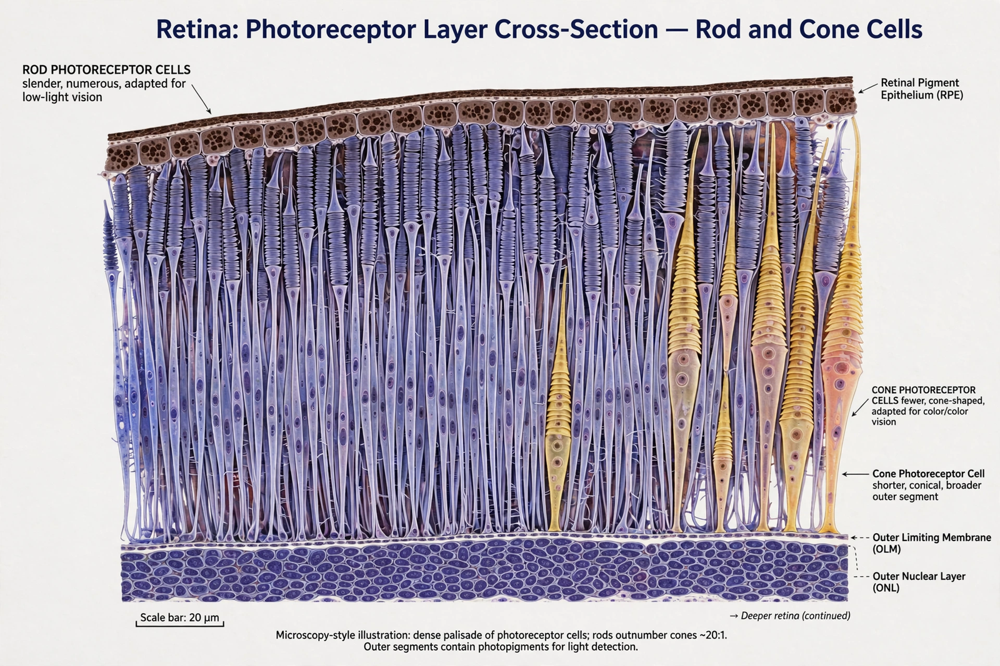

| Photoreceptor cell | |
|---|---|
| Location | Retina |
| Types | Rods, cones, photosensitive ganglion cells |
| Function | Convert light into neural signals (phototransduction) |
| Key molecules | Opsins (rhodopsin, photopsins, melanopsin) |

A photoreceptor cell is a specialised type of neuroepithelial cell found in the retina that is capable of visual phototransduction. The great majority of photoreceptors are the image-forming rod cells and cone cells; a third class, the intrinsically photosensitive retinal ganglion cells, uses the pigment melanopsin mainly to regulate circadian rhythms and the pupillary reflex rather than to form images.
Photoreceptors convert photons into electrical signals. Their outer segments contain the light-sensitive pigment — an opsin protein bound to a vitamin A-derived chromophore (11-cis-retinal). Absorbing a photon isomerises the chromophore, activating a G-protein (transducin) cascade that closes sodium channels and hyperpolarises the cell: unusually, photoreceptors signal light by reducing their release of the neurotransmitter glutamate.
Rods (~120 million) operate in dim light with a single pigment type, giving sensitive but colourless vision. Cones (~6–7 million) need brighter light but come in three types (L, M and S) with different spectral sensitivities, enabling colour vision; defects in these underlie color blindness. Cones are concentrated in the fovea, rods in the periphery. Photoreceptor outer segments are constantly renewed, their shed tips phagocytosed by the retinal pigment epithelium.
Degeneration of photoreceptors is a major cause of blindness. In age-related macular degeneration, central cone-rich retina is lost; in retinitis pigmentosa, rods die first. Because photoreceptors do not regenerate in mammals, their loss is permanent, motivating research into retinal prostheses, gene therapy and cell transplantation.
This article was recreated from memory as part of a web-reconstruction exercise.